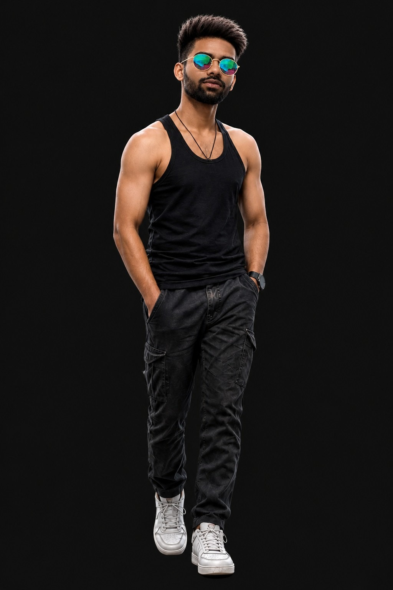

01 / WEB APP
m.OverviewTransactionsInsights
AVAILABLE BALANCE₹ 48,290.00
IncomeExpenses
FINANCE · DASHBOARD
Money Mind
A personal finance tracking dashboard with a PIN entry screen, designed to make tracking money feel simple and approachable.
BUILDER · ENGINEERING STUDENT · CURIOUS BY DEFAULT
I'm Sairaj, an Electronics & Telecommunication Engineering student exploring the space where software, data, and real-world systems meet.

01 / SELECTED WORK
A selection of things I've built across web development, automation, and engineering. Each project is a chance to solve a real problem and learn something new.
FINANCE · DASHBOARD
A personal finance tracking dashboard with a PIN entry screen, designed to make tracking money feel simple and approachable.
PRODUCTIVITY · WEB APP
A dashboard concept for tracking study activity and making learning habits easier to understand.
PRODUCTIVITY · WEB APP
A daily task-writing dashboard designed around a focused, straightforward planning experience.
COMMUNICATION · WEB APP
A private-room chat website concept organized around rooms and suites for focused conversations.
LISTENING FOR THE NEXT IDEA
AI · PERSONAL PROJECT
An independently developed personal AI assistant. Currently in progress, with features still being explored and built.
PYTHON · API INTEGRATION
A Telegram bot that collects user input and saves information, built with Python and an image-generation API.
ENGINEERING / HARDWARE
IR-sensor-based tracking project completed through hardware simulation and programming.
Lighting project responding to sunlight conditions and user-selected settings.
A robot project designed to help clean floors and collect trash.
02 / A LITTLE ABOUT ME
I like questions that need both logic and imagination.
I'm pursuing a B.Tech in Electronics and Telecommunication Engineering at Government College of Engineering, Yavatmal. I enjoy mathematics, programming, electronics, space, and automation, and I'm building my skills through practical projects.
My current direction is data science and software, grounded in an engineering mindset: understand the system, test the idea, and keep improving it.
More details in my résumé ↗Build around a real task, not just a list of features.
Learn beyond one domain and connect ideas across disciplines.
Start, test, understand what fails, and make the next version better.
03 / TOOLKIT
A growing toolkit across software and electronics. I keep learning, and I label my current learning areas honestly.
CROSS-DISCIPLINARY BY DESIGN
C · Python · HTML · CSS · JavaScript · Embedded C
NumPy and pandas (foundational) · SQL (currently learning)
Electronics fundamentals · Circuit simulation · 8051 · 8085
MATLAB · Simulink · Ansys HFSS · Proteus · Keil · Git & GitHub
Microsoft Office · Canva · Adobe Express · Blackmagic Design
CONTINUOUS LEARNING
04 / THE JOURNEY
A snapshot of the education and training shaping how I think, build, and solve problems.
Government College of Engineering, Yavatmal · Currently pursuing
Skill India Digital Hub, Yavatmal · HTML, CSS, JavaScript, Python back-end development, and API use.
EFY Training Institute · Embedded C programming, 8051 microcontrollers, and 8085 concepts.
School of Scholars, Nagpur
OPEN TO INTERNSHIPS, PROJECTS & COLLABORATION
Let's turn a thoughtful question into something real.
LET'S TALK ↗